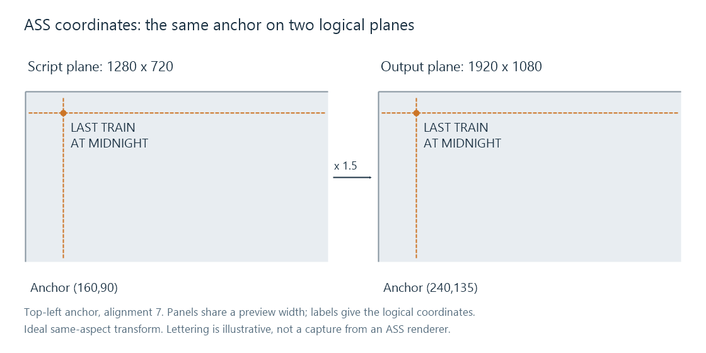

Advanced SubStation Alpha subtitles (ASS)
ASS stores styled subtitle events with a script coordinate system, reusable styles, and local or timed override instructions.
An ASS subtitle can be a simple dialogue line near the bottom of the picture, or a translated sign positioned over a sign in the scene. Advanced SubStation Alpha stores the timing, text and instructions for that presentation in one script.
The format's power comes from two levels of styling: a named style shared by many events, and override tags within an event. An event can change position, colour or other properties while it is active. The subtitle therefore describes more than a string to place in the player's usual caption box.
A minimal script with a positioned event
[Script Info]
ScriptType: v4.00+
PlayResX: 1280
PlayResY: 720
ScaledBorderAndShadow: yes
WrapStyle: 0
[V4+ Styles]
Format: Name, Fontname, Fontsize, PrimaryColour, SecondaryColour, OutlineColour, BackColour, Bold, Italic, Underline, StrikeOut, ScaleX, ScaleY, Spacing, Angle, BorderStyle, Outline, Shadow, Alignment, MarginL, MarginR, MarginV, Encoding
Style: Default,Arial,36,&H00FFFFFF,&H000000FF,&H00000000,&H80000000,0,0,0,0,100,100,0,0,1,2,0,2,20,20,30,1
[Events]
Format: Layer, Start, End, Style, Name, MarginL, MarginR, MarginV, Effect, Text
Dialogue: 0,0:00:12.50,0:00:15.00,Default,,0,0,0,,{\an7\pos(160,90)}LAST TRAIN\NAT MIDNIGHT
The original example supplies one style and one event. Its event is active from 12.5 to 15 seconds. It chooses Default, then overrides its alignment and position. \N in the rendered text is a forced line break; it is not a new timed event.
The Fontname requests a font family. The file does not become self-contained merely because it names Arial. The selected rendering environment still needs an appropriate face.
ASS colour notation also differs from ordinary web RGB notation. Style colours use alpha plus blue, green and red byte order. Alpha 00 is opaque and FF is fully transparent. The example's white primary colour is opaque, while the background/shadow colour includes transparency.
Script coordinates establish the anchor
PlayResX and PlayResY define the script's logical resolution. In this example it is 1280 × 720. The \pos(160,90) override places the alignment anchor at x = 160, y = 90 within that coordinate system.
With \an7, the anchor is at the line's top left. With \an2, it would be at the bottom centre. The same position numbers can therefore put the visible lettering in a different place when alignment changes.

For an ideal same-aspect mapping to 1920 × 1080, the scale is 1.5 in each direction:
x = 160 × 1.5 = 240
y = 90 × 1.5 = 135
This diagram explains the coordinate relationship, not the output of a particular ASS renderer. Cropping, letterboxing, sample aspect ratio and render-surface choices can add another transform. The logical script dimensions should not be casually replaced with the new output dimensions while keeping all position values unchanged.
The style's margins determine default placement when an explicit position does not take over. Scaling border/shadow and other renderer conventions also affects appearance. Those details are why a precise sign layout needs more than matching a font-size number.
One event can change during its lifetime
An override such as:
{\an7\move(160,90,480,90,0,1000)}LAST TRAIN
moves the anchor from (160,90) to (480,90), beginning at the event's start and completing 1,000 ms later. The motion times are relative to the event. They are not new absolute movie timestamps.
In the ideal linear motion, halfway through that interval the anchor is at (320,90). Once the motion has completed, it remains at the final position for the event's remaining active time.
Other instructions can change properties over time, fade text, use drawing shapes or time karaoke syllables. A renderer evaluates the event at the current playback instant. It cannot recreate an animated sign by drawing one immutable caption image for the entire interval.
A seek into the middle of the event likewise needs the presentation at the sought time, including the relevant animation state.
Fonts affect the geometry
The selected face supplies glyph shapes, advance widths and baseline metrics. A fallback with wider letters can change where a line wraps or how it fits a sign, even when \pos and the event text are unchanged.
For an invented 300-unit-wide sign area, advances totalling 280 units fit, while a 320-unit total does not. A different font does not merely change decoration; it changes the layout calculation.
Matroska can carry font attachments alongside ASS. In an Emby app-rendered route, usable resources must reach that renderer. In a server-rendered route, the server needs them where the text is drawn. The file's attachment list and the chosen font face are related evidence rather than interchangeable labels.
Converting the script means choosing what to retain
A plain SRT conversion can preserve this example's wording and cue interval. It has no equivalent for the complete positioned, moving presentation described above. A web or native text renderer may support another subset.
Keeping ASS with a compatible renderer retains the script model. Incorporating its rendered result into video retains the appearance of that output version. These produce different deliverables: one keeps the timed instructions and a selectable subtitle; the other stores the resulting pixels in the video.